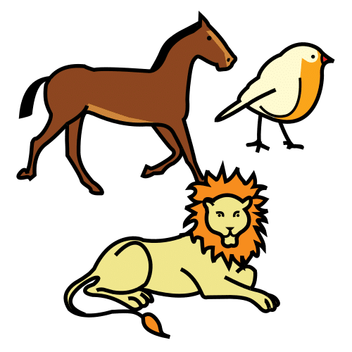

El proyecto parte de la presentación del juego de mesa Concepts Kids. Animales es un juego cooperativo en el que se usan los iconos del tablero para que los demás adivinen el animal.
El eje motivador del proyecto es la descripción de animales. La intervención se centra en todos los componentes del lenguaje ( fonético, fonológico, semántico, morfosintáctico y pragmático)
El objetivo principal es estimular el lenguaje oral en los alumnos y alumnas de 5 años. Además de prevenir, detectar e intervenir las posibles dificultades comunicativas.